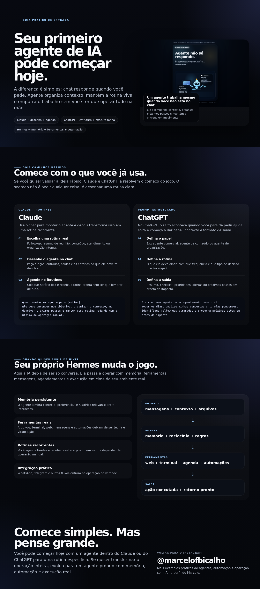

01
Claude
Como usar o chat para desenhar um agente e depois transformar isso em uma rotina recorrente.
Esse material mostra como começar com Claude e ChatGPT e também como pensar em um agente mais avançado, com memória, automação e operação real.

Uma visão direta do que muda quando você sai do uso solto de IA e começa a estruturar uma rotina com agente.
Como usar o chat para desenhar um agente e depois transformar isso em uma rotina recorrente.
Como estruturar papel, contexto, rotina e saída para sair do uso genérico e ganhar consistência.
Como pensar um agente próprio com memória, ferramentas, automações e execução real.